AWS Project
EC2 + Docker
Objectives
Setup an EC2 instance and deploy a containerized
application using Docker.
Preperations
1. Create an index.html file or download the one attached to my repo.
2. Navigate to the EC2 management Condsole and create a new key-pair file to be used later. EC2 instance creation isn't required.
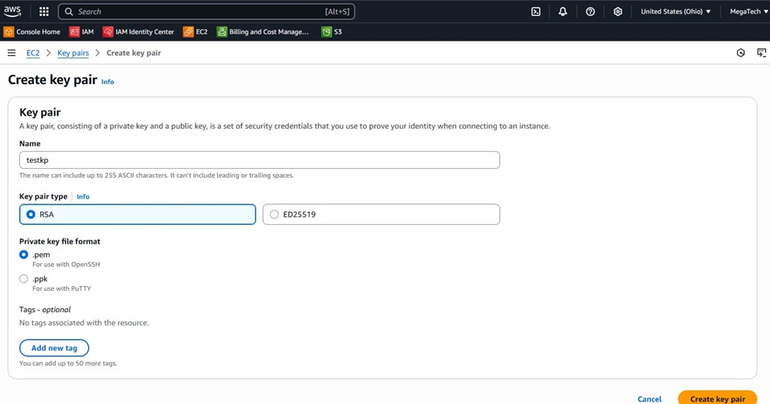
3. Goto the IAM Console -> Roles -> Create Role.
4. Select AWS Service and under Trusted Entity Type select EC2 under the Use Case section.
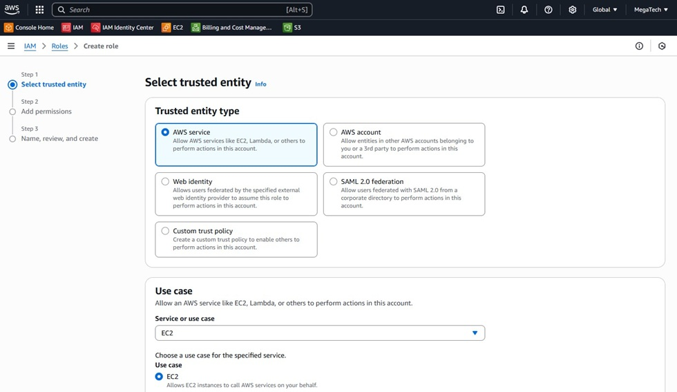
5. Under the Add Permissions search box find AWSElasticBeanstalkWebTier and add it. This will allow Elastic Beanstalk
to create the EC2 instance since it will have the role assigned in the next step.
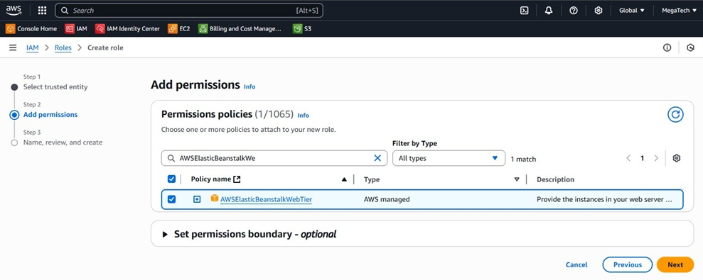
6. Enter a role name and click create role.
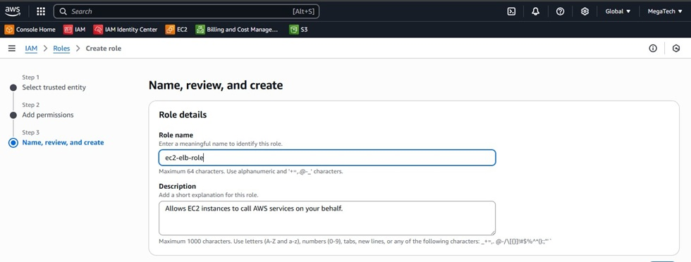
Setup Gethub Repo
1. Log into your Github and under your profile choose Your Repositories.
2. Click Create a new repository. Name it and set it to Private.
3. Navigate to your repo and click the add file button. Add the index.html file created earlier.
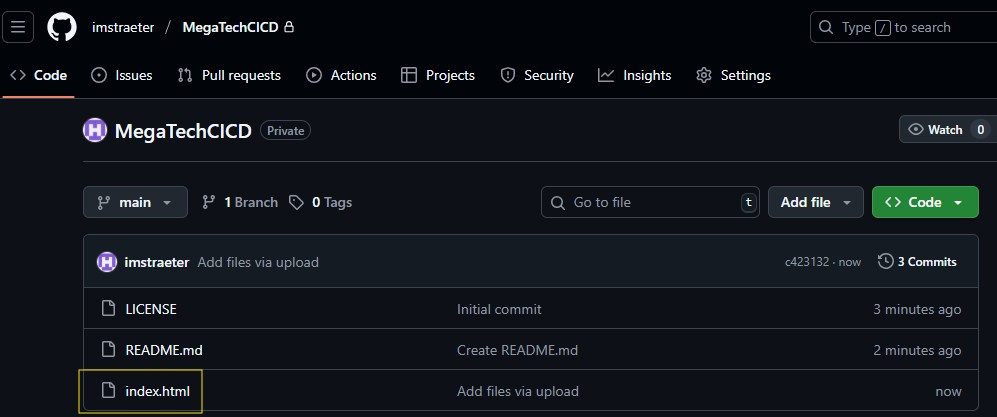
Elastic Beanstalk
1. Back in your AWS account, navigate to Elastic Beanstalk and click Create Application.
2. Enter the options shown below.
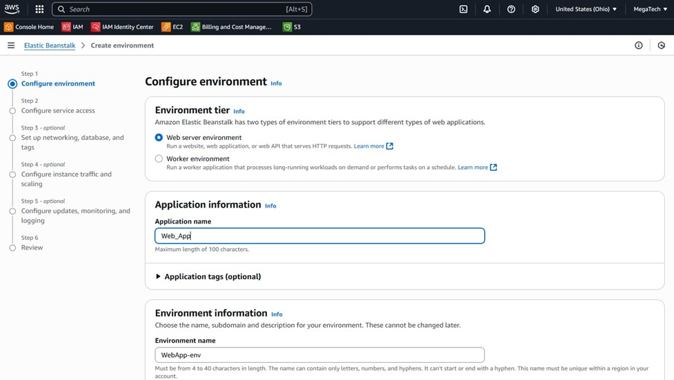
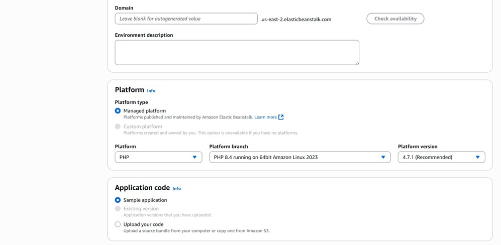
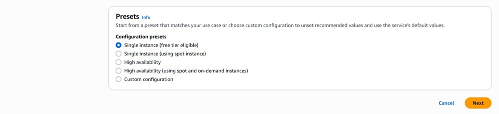
3. Click next and on the Configure Service Access page enter as shown.Note: This is where we will reference the key pair prepared earlier.
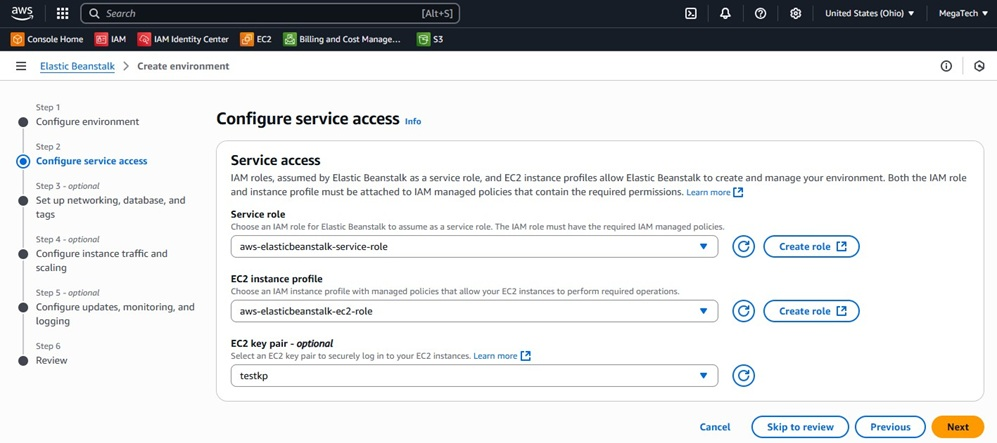
4. Skip ahead to the Review step. Click Create.
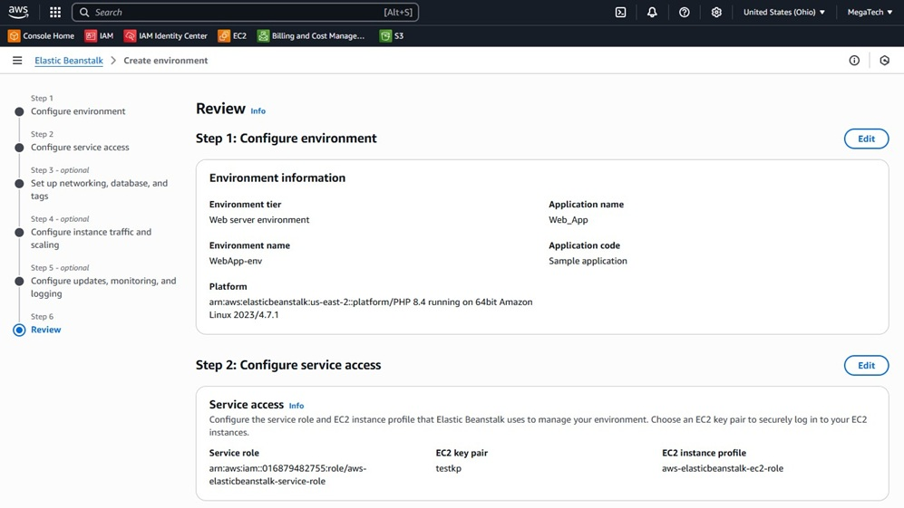
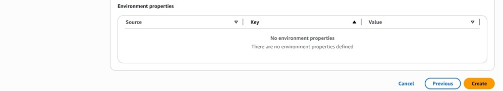
5. Once the environment setup is completed, you'll see the screen shown below.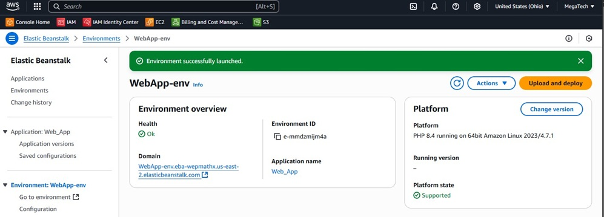
6. Click on the URL in the Domain field to verify the environment is working. It will open a tab in your web browser showing the page below.
We now have an EC2 instance running serving our website!
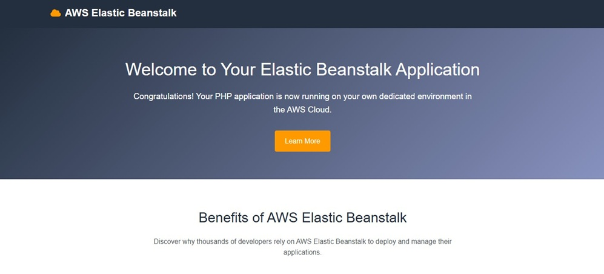
Setup the CI/CD Pipeline
1. Navigate to CodePipeline in the AWS Management Console and click Create Pipeline.
2. On Step 1 choose Build Custom Pipeline.
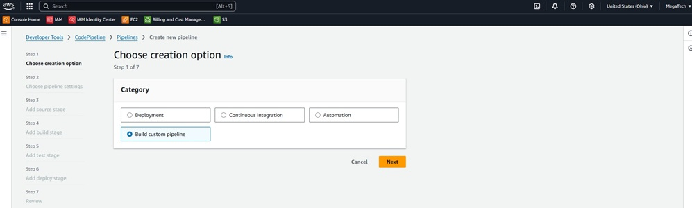
3. Enter the values for the pipeline name and role.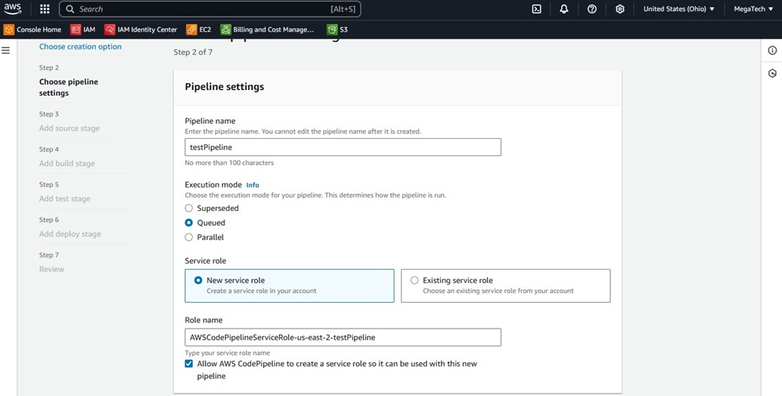
4. For the Source provider choose Github via Oauth.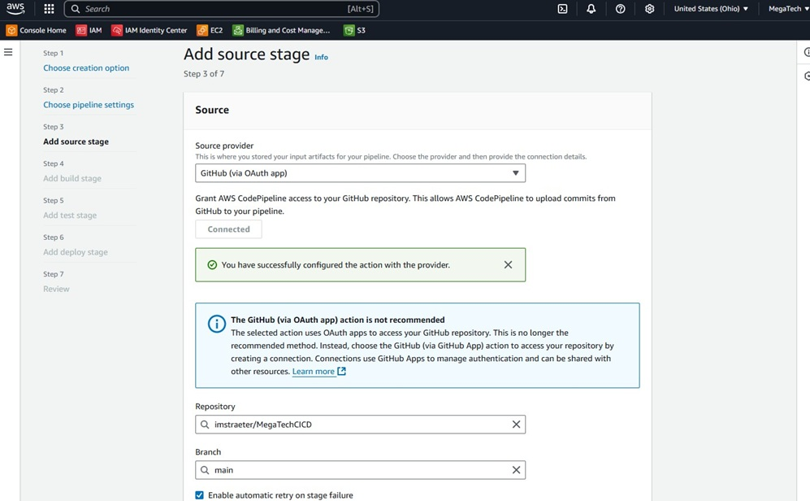
5. Follow the steps to create the connection to your Github repo.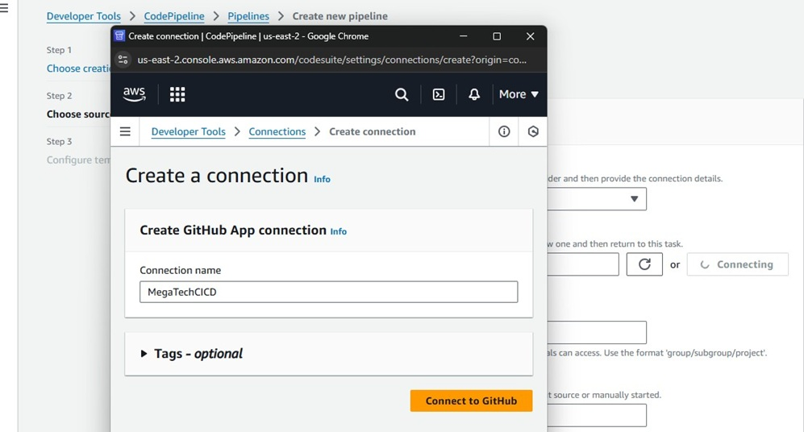
6. Proceed to step 6, add deploy stage. Enter as shown.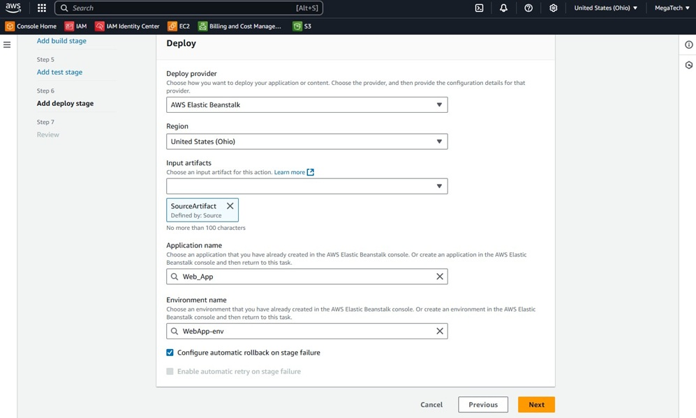
7. If everything goes well, you should see both the source and deploy stages turn green.Note: I did have an error when I first deployed. It was due to a missing privilege
which I added to the role to resolve the deploy error.
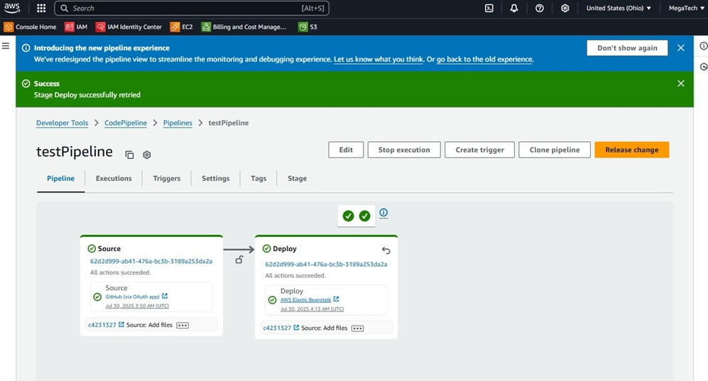
8. Click on AWS Elastic Beanstalk in the Deploy stage tile and it will take you back to the beanstalkenvironments. Click the URL in the Domain field.
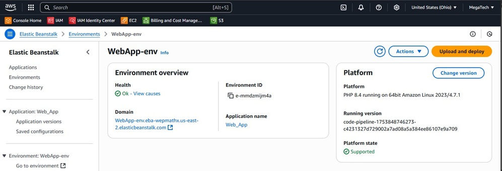
9. You should see your new webpage deployed using Elastic Beanstalk!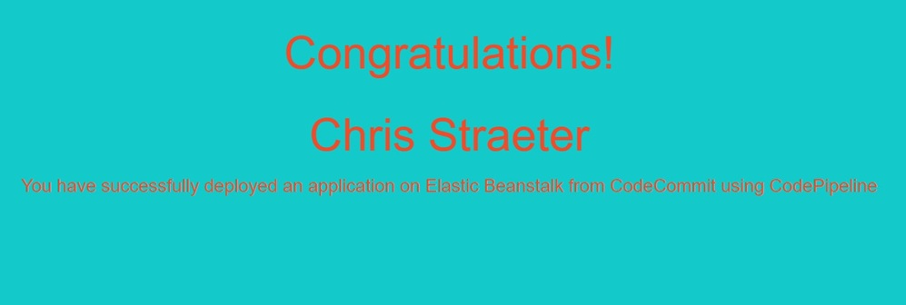
10. Now we can test updating the code in the Git repo to see the CI/CD pipeline in action.
Open the index.html file in a code editor and edit some text. The one provided within
github is fine for this.
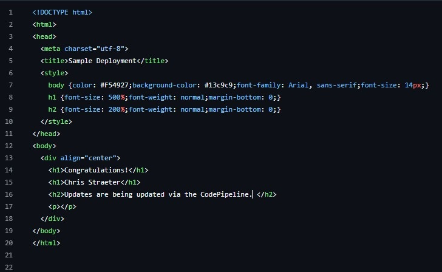
11. Check on the CI/CD pipeline to see it in action.
Once it says Succeeded as shown below we can verify in the browser.
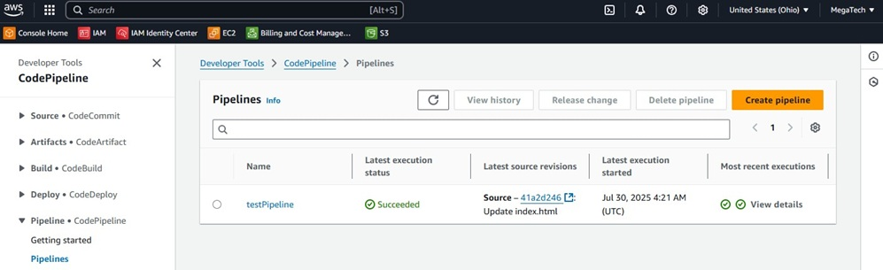
12. Now we can refresh the browser to see the changes reflected.
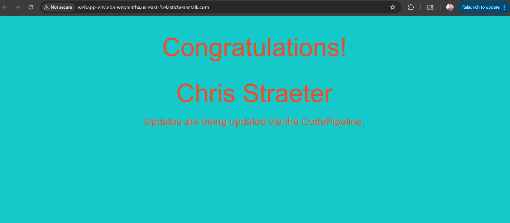